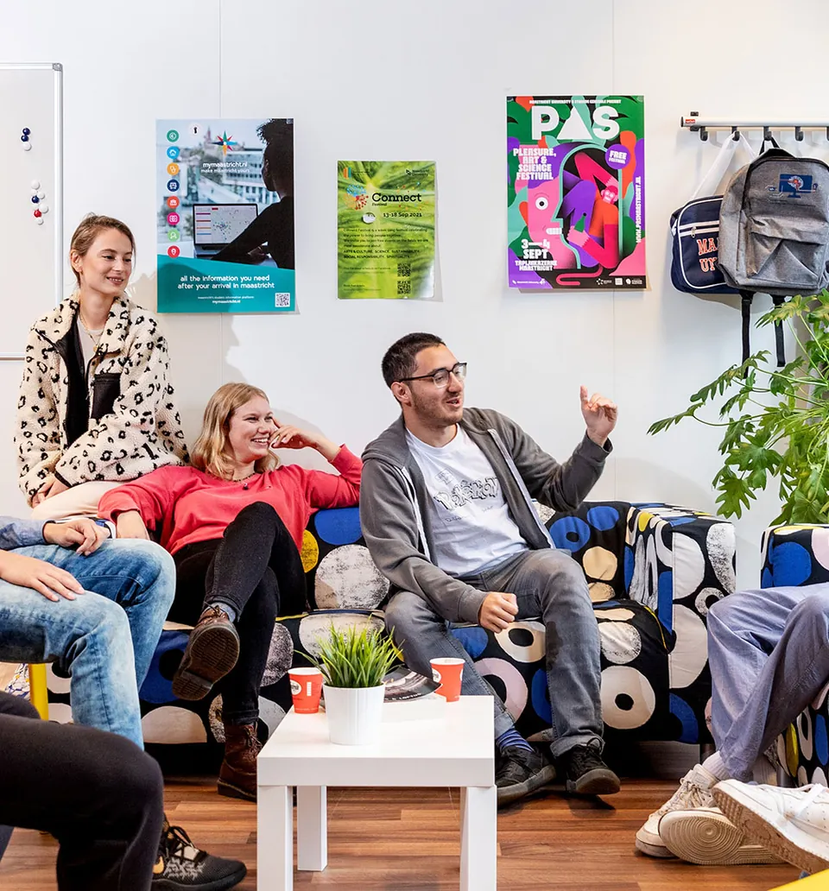
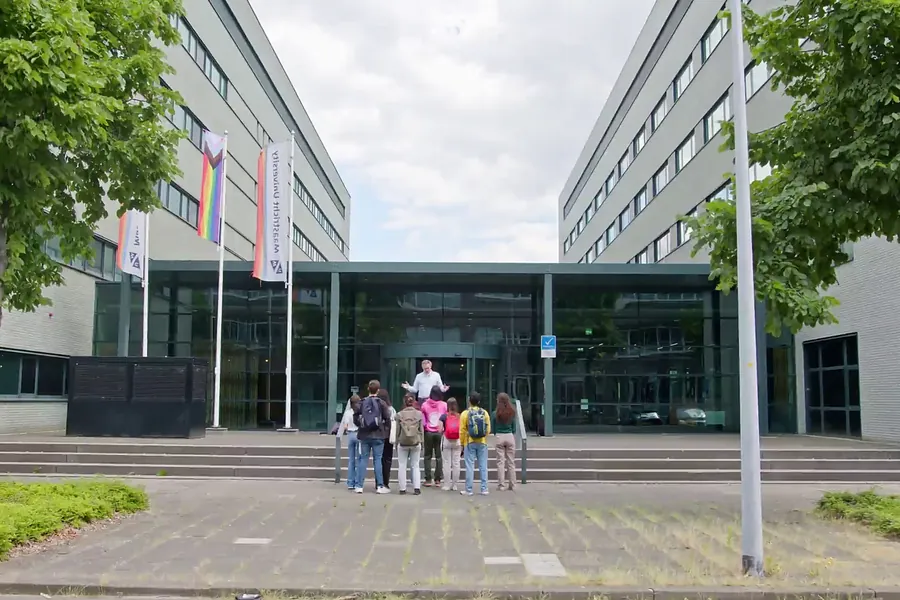
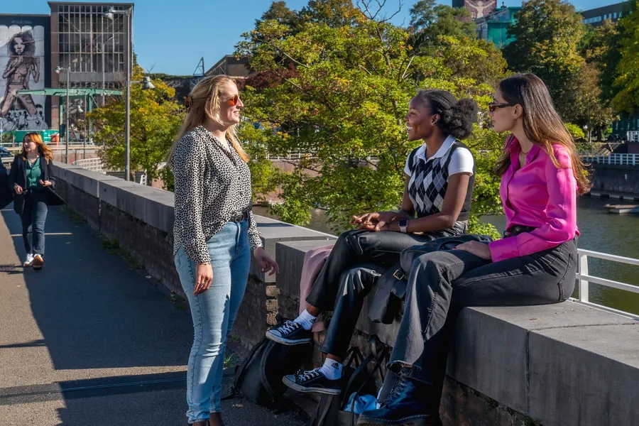
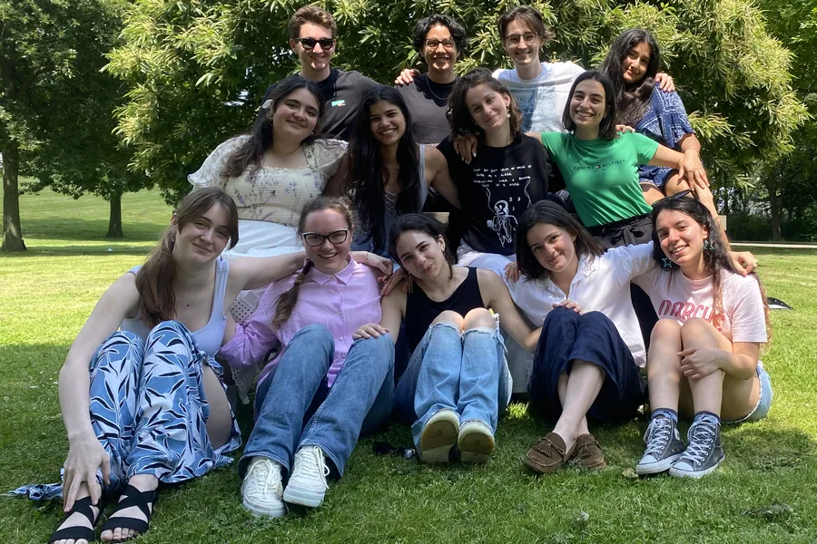

Congratulations on your place at MSP. Between now and the start there are a few things to arrange, and most of them have a date. They're all on this page, in the order they come. We'll also remind you of each one by e-mail, and you can reply to any of our mails if something is unclear or not working.

Tick what you have done; the ticks stay in this browser only, nobody else sees them. The official status of every task is in your MyApplication portal.
Reply to the e-mail with your offer and say that you accept your place, with your name and student number. You then receive MSP's conditional approval letter, and your enrolment tasks open in the portal.
No. Accepting reserves your place, and you can hold offers from other programmes too. Your enrolment only becomes final when you have completed the enrolment tasks and UM has enrolled you. If you would rather wait before accepting, write to us with the date by which you can decide.
The dates and the sign-up form for the Introduction Days arrive on your UM e-mail address in early summer, so set it up now and check it now and then. You'll need the authenticator app on your phone for Canvas and the other systems in your first days.
UM does not offer housing itself but works with partners: Maastricht Housing (one-off €35 registration) and Hospi Housing (a room with a local host). Please don't come to Maastricht without a place to stay.
Never pay a deposit or rent, and never sign anything, before the room has been viewed; if you can't go yourself, a live online viewing service can do it for you. Huurteam Zuid-Limburg checks your rental contract for free before you sign.
For a safe start you can book a short-stay room at the UM Guesthouse through Maastricht Housing. Many students also live in nearby towns with direct train or bus connections. mymaastricht.nl has more tips.
You can't apply yourself: the UM Visa Office applies to the immigration service (IND) for you and e-mails your private address after your offer, from early April. Add visa@maastrichtuniversity.nl to your safe senders, and don't act on the visa task in the portal until they have written to you.
A passport valid until at least six months after the programme starts, proof of at least €1,250 a month for living costs (only a deposit with UM or an institutional or educational scholarship counts, not a bank statement), and the legal fee of €254. UM must submit your application before 1 July, so your file must be complete by 30 June. Don't travel to the Netherlands before your permit is approved.
UM can only apply for your residence permit once you are fully admitted, with any maths proof or English certificate in and the full year's tuition paid in one bank transfer. Instalments and direct debit are not possible if you need a visa.
As soon as you have your diploma or final results, follow the portal task "Send certified copy of diploma". Dutch diplomas are checked through DUO. Diplomas go to the Student Services Centre, not to the MSP admissions office.
If your diploma itself is only issued after the programme starts, you send a UM graduation statement instead; the portal task explains how. If anything is delayed, contact the Student Services Centre as early as possible (study@maastrichtuniversity.nl) with your student number, and let us know at the same time.
Choose a direct-debit authorisation (eight instalments or one go) or one bank transfer of the full amount. Arranging it by 1 August makes sure your timetable and UMcard are ready on time; the firm deadline is 31 August. With a direct debit the first instalment is usually taken in late September, which is fine.
You get the dates, the programme and a sign-up form on your UM e-mail in early summer. The Introduction Days are in the second half of August; for 2027 they are being planned together with UM's introduction week (INKOM), so wait for the dates before you book travel.
Plan to be in Maastricht for the whole week. The lab safety training is compulsory in any case, because lab work is part of your first courses. If you can't be there on time, tell MSP's Education Support (msp-educationsupport@maastrichtuniversity.nl) as early as possible with your arrival date. You can take part even if your certified diploma is still on its way.
Within five working days of arriving you register with the municipality (gemeente, the local city office), by appointment, and get your citizen service number (BSN), which you need for health insurance and a bank account. For that you need a legalised or apostilled birth certificate, not older than six months, which you arrange in the country where you were born.
Bring your passport or EU ID card, your signed rental contract, the birth certificate, and your Certificate of Enrolment or the conditional approval e-mail, with copies of all of them. The Visa Office sends you instructions for the registration, and you also bring your residence permit or its "confirmation receipt of decision" e-mail. Health insurance is compulsory; UM's International Student Helpdesk can tell you which one you need.
The full programme of your first days, and what to bring, are in the MSP introduction course on Canvas. The most useful preparation besides that: brush up your maths, especially calculus, and read about Problem-Based Learning.
UM can only enrol you when every task in your MyApplication portal is complete: the certified diploma, the payment details, an updated passport or ID if asked, and your visa. Finish them before your first day, so your UMcard and timetable are ready; the formal deadline is 31 August 2027, 23:59 CET.
The academic year starts on Monday 30 August 2027, right after the Introduction Days. We look forward to meeting you. See what your first week looks like.
Ask Mosa, our assistant, any time. Or reply to any of our mails, or write to us directly: a person from the admissions office answers. Tell us what you're stuck on, and we'll help you finish it.
From September



Several UM offices are involved. Write to the right one and you'll get an answer faster.
| Your offer, accepting, deferring, anything about MSP's selectionand anything you're not sure about | MSP admissions officemsp-admissions@maastrichtuniversity.nl |
| Your diploma, documents, Studielink and paying tuition | Student Services Centrestudy@maastrichtuniversity.nl · +31 43 388 5388 |
| Your visa and residence permit | UM Visa Officevisa@maastrichtuniversity.nl |
| The Introduction Days, arriving late, your timetable | MSP Education Supportmsp-educationsupport@maastrichtuniversity.nl |
That's fine, and it happens. Withdraw in Studielink before 1 September 2027 (My Studielink, My courses, Course details, Cancel); then you don't pay tuition, and tuition you already paid is refunded (if you needed a visa, your living-costs deposit too, on request). Not refunded: the €100 handling fee, if you paid one (it only comes back when you start at UM), and, if you needed a visa, the €254 legal fee once the Visa Office has sent your application to the IND. Then let us know, so we can close your file and stop sending you mail.
If you're willing, tell us where you're going instead and what made the difference. It's optional, it takes a minute, and it's the best way for us to learn what to do better.
Dates for September 2027 as published by UM and MSP. The Introduction Days dates and the start of the academic year (30 August 2027, preliminary) will be confirmed; this page is updated when they are.